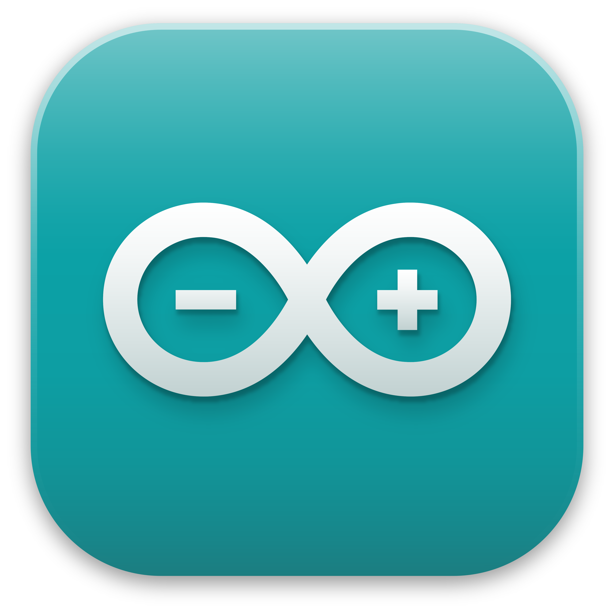
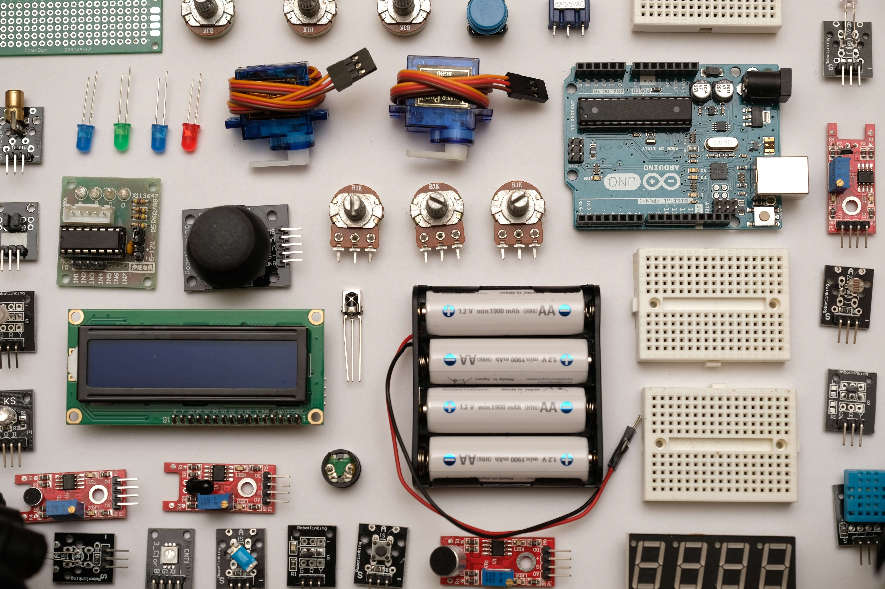
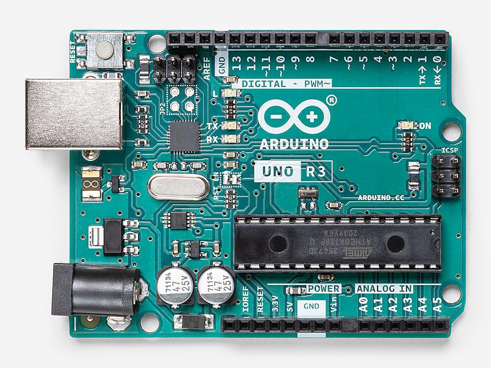
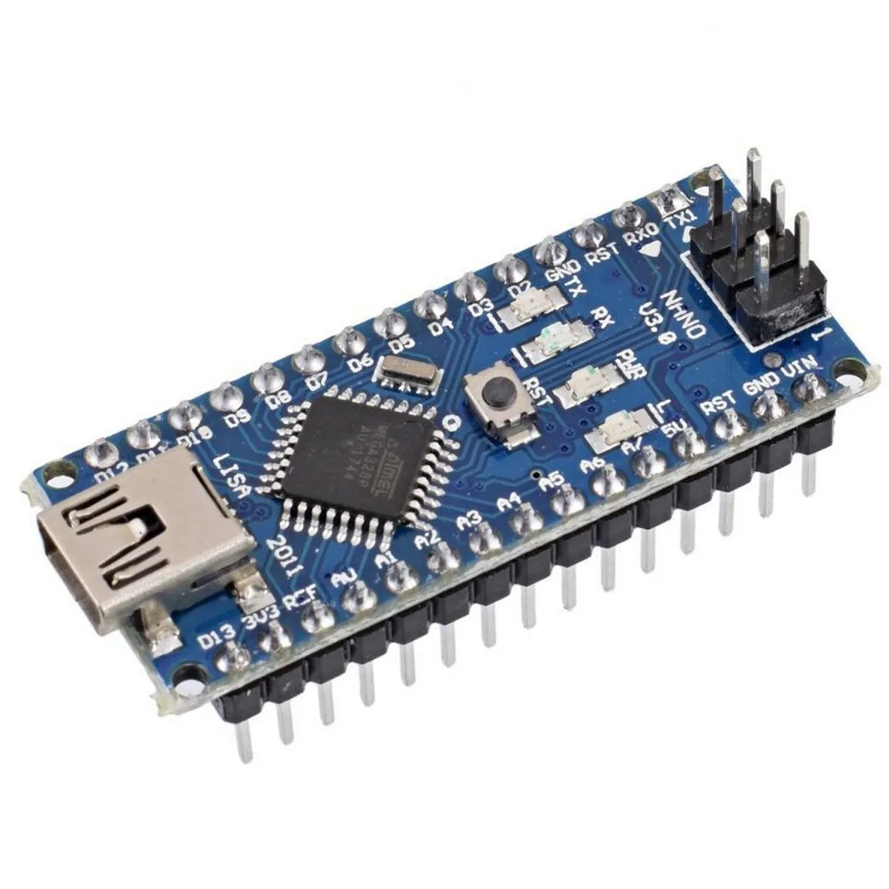
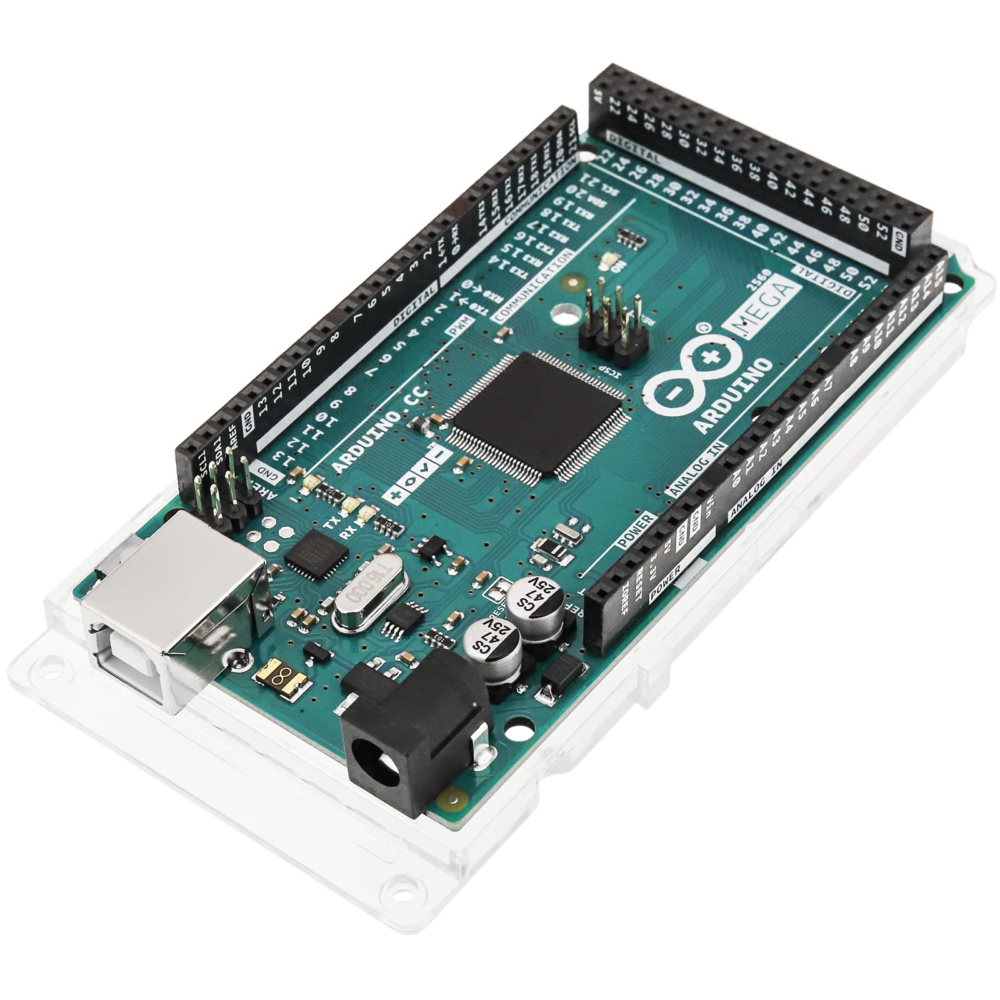
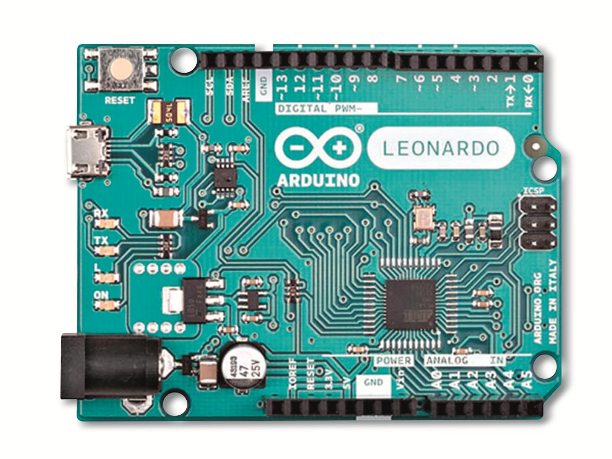

Arduino e seus projetos

O Arduino é uma plataforma de prototipagem eletrônica fácil de usar,
muito utilizada em projetos de automação e robótica. Com ele,
é possível criar desde sistemas simples, como acender LEDs,
até soluções mais complexas, como casas inteligentes e robôs.
Criatividade com Arduino
O Arduino permite explorar a criatividade na criação de projetos tecnológicos,
ajudando a transformar ideias em soluções reais. Com ele,
é possível desenvolver dispositivos personalizados, como alarmes inteligentes,
sistemas automatizados e projetos interativos, estimulando o aprendizado e a
inovação.

Alguns sites para encontrar codigos, projetos e estudo:
Melhores placas arduino:
- Arduino Uno A mais usada e perfeita para iniciantes.
- Arduino Nano Versão menor do Uno.
- Arduino Mega 2560 Indicada para projetos grandes.
- Arduino Leonardo Pode funcionar como teclado ou mouse no computador.
- ESP32 (Arduino compatível) Com Wi-Fi e Bluetooth integrados.



